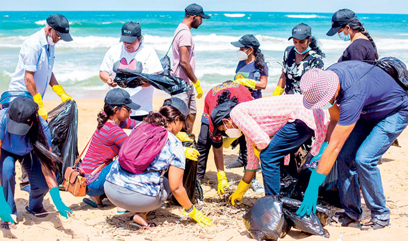

Introduction to Turtles in Sri-Lanka

Sri Lanka is home to five of the world's seven species of sea turtles:
- Green Turtle
- Olive Ridley Turtle
- Leatherback Turtle
- Hawksbill Turtle
- Loggerhead Turtle
Each of these species has unique characteristics and is essential to the ocean's ecosystem. For example, the Hawksbill Turtle plays a crucial role in maintaining the health of coral reefs by eating sponges that would otherwise overgrow and harm the reef. However, all of these species are threatened due to factors such as plastic pollution, egg poaching, and loss of nesting sites.
Turtle Conservation in Sri-Lanka

Sri Lanka has implemented several turtle conservation projects to protect the turtle population and their habitats. One of the most successful projects is the Kosgoda Turtle Conservation Project, where volunteers work to monitor turtle nesting sites, protect eggs from poaching, and release hatchlings into the ocean. In addition, Sri Lanka's government has implemented laws and regulations to protect turtle habitats and limit fishing practices that harm turtles. However, more efforts are needed to ensure the survival of these magnificent creatures.
How to protect the turtles in Sri-Lanka
There are many ways that you can help protect the the turtle population of Sri-Lanka,Here are a few ideas
- Reduce your use of plastic by using reusable bags, water bottles, and straws.
- Participate in beach cleanups.
- Support conservation efforts by donating to organizations
- Spreading awareness by educating others about the importance about turtle conservation